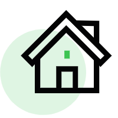
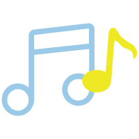

Come on!You are the best!

主页
我的相册

我的音乐
我的简历
上大学前，
做着在图书馆抱一堆书洒落一地
然后邂逅一个人的梦；
上了大学才发现，
那种事情一般不会发生。
上大学前， 那时候纯真可爱， 那时候努力认真， 那时候有目标有信仰， 那时候有多少美丽的期盼。 上大学后，梦想是梦想，现实是现实。
当你跨入大学校园之后，你是不是发现其实考上大学的你并没有实现所谓真正意义上的解放。 你需要面对繁重的学业压力； 你需要平衡学习、工作、生活； 你需要思考未来四年如何度过； ...... 学习、交友、社团活动、旅游、恋爱、培养兴趣，处理人际关系，适应大学生活等等，甚至是一张回家的火车票也会让远离家的你费劲周折。 大学那些事儿看起来似乎琐碎无比，但细心品味后也会带给你会心地一笑。无论眼前的大学生活多么“苟且”，也要向着诗和远方。 梦想一定要有的，任何人都应该有，也应该被人们所尊重。正因为渴望，所以想要拥有，才会想办法慢慢走向那个方向。在前进的道路上都会有坑坑洼洼，但要学会左手安慰右手，不断成长自己！
项目经历
★ 2020.04 基于Wifi信道状态的人体跌倒监测系统2020年参与河南省创新创业训练项目《基于Wifi信道状态的人体跌倒监测系统》，主要针对年迈人群以及行动不变的人群，实现实时监测老人是否摔倒。我主要和负责人进行前期的课题选择和前期调研，分析项目的可行性，学习研究CSI和Fisher鉴别准则，进行反复测试进行包装。
★ 2022.05 基于树莓派与mqtt服务器的实验田智能防盗系统
2022年5月参与“互联网+”《基于树莓派与mqtt服务器的实验田智能防盗系统》创新创业项目，主要实现实验田实时土壤监测、监视是否有人闯入并语音劝阻。我主要担任市场调研工作，进行实验田文献搜集并记录，巡查问题反馈、文档撰写工作，参与数据的收集和技术部分实现。
荣誉奖励
★ 2022.05 2022 年河南省“互联网+”大学生创新创业大赛省级三等奖*2★ 2020.05 大学生省级重点创新创业项目优秀结项一项
★ 2020.12 所在“华小青”示范班获得“最具活力奖”
★ 2021.09 参加“三下乡”党史考察社会实践队并获得社会优秀实践队
★ 2021.05 获得院级华彩杯“‘承艺’非物质文化遗产”创业组计划二等奖、“OTO-形象工作室”三等奖
★ 2019-2020年期间获得国家励志奖学金、校级优秀学生二等奖学金、学业一等奖学金，优秀团员、三好学生、社会实践先进个人等荣誉。

个人自荐
★ 本人在校成绩优异，排名第4名，专业总人数为215。★ 本人是一个乐观开朗、对学习和生活充满热情的人，责任心强、独立认真思考、注重团队合作、能够承受较大工作压力
★ 丰富的实践经验： 在校期间，参加多次项目创办，虽然编程比赛经验欠缺，但我有高昂的学习热情和学习意愿。
★ 热爱运动：大学期间坚持每天两小时的运动拉伸，培养了忍耐力，保证了学习的精力